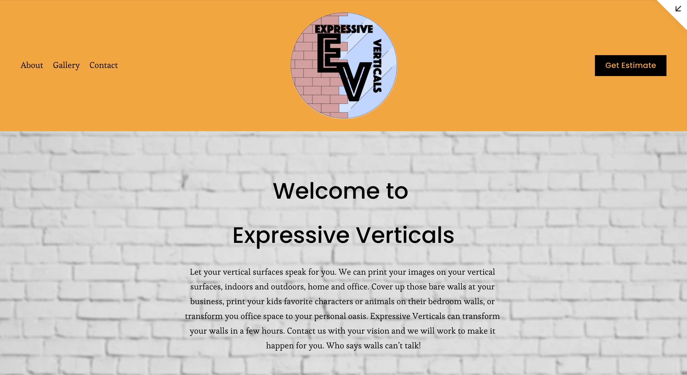
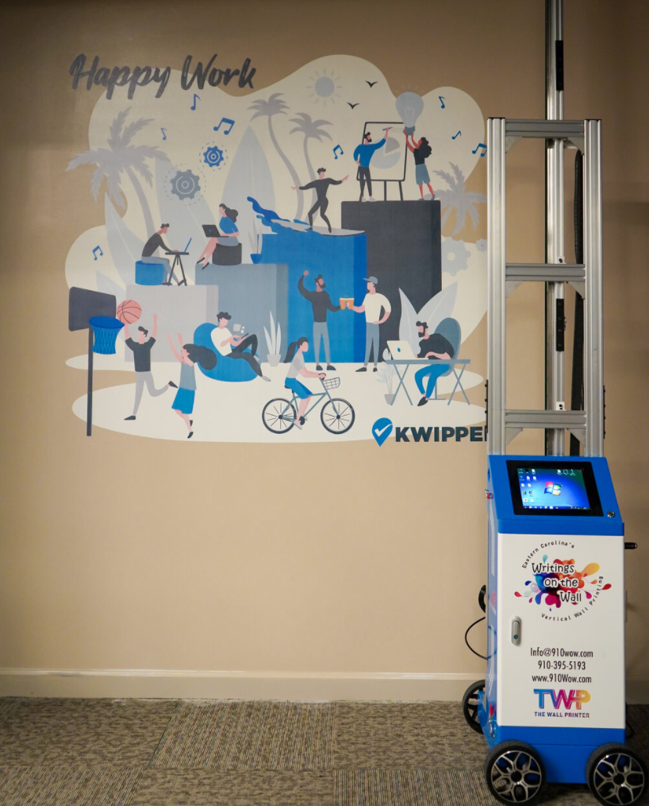
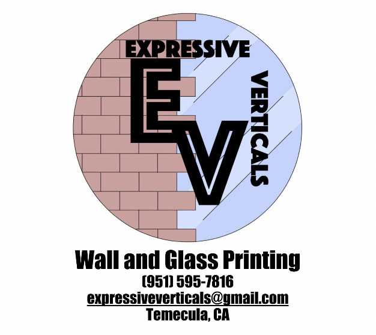
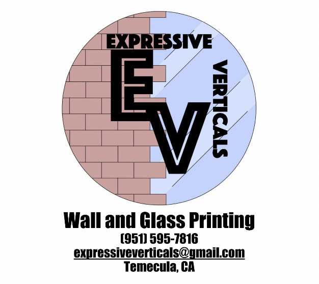
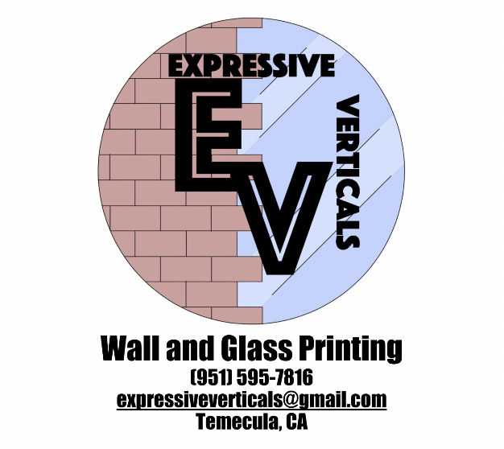

Mateo Joseph
My name is Mateo Joseph. I am currently a full time student-athlete at the University of California Riverside. I have attended school all my life and have done well throughout the years. As of 2021, I am a first year at my school. I haven't done much yet but I have big plans for my future. I was able to become successful in both athletics and academics in my highschool career and so far that seems to be consistent now in college. I never failed a single class, finishing each year with a 3.0 GPA or higher along with being the top and amongst the top athletes in the country graduating with a near full scholarship to UCR. Being able to balance the life of a student athlete and be successful with it takes a lot of willpower. Not many can do it, and I’m still standing strong.
Growing up in a military family I learned responsibility, integrity, dedication, and sacrifice. These traits were instilled in me at a very young age and I have since been a stand out student and athlete because of it. I make my mark wherever I go and for good reasons. Being in a military family also taught me adaptability and patience. Moving from one place to another can be a very emotionally draining and stressful event. Having to learn new people, places, social and geographical environments can be overwhelming for many people. Military families have to move around fairly often. As a kid I had no choice in the matter, because of this I have plenty of experience learning and adapting to new environments. Having the ability to interact well with others became a necessity for me. To be able to translate that to the workplace will be simpler to me than it would for most other people. I practiced these traits often throughout my academic and athletic past. These skills are proving to be useful in my first couple months of college and will prove to be useful in any working environment that I take part in. No matter who hires me, I’ll be sure that the work that needs to get done, will get done. Put me in charge of a group of people or tasks and the leader in me will take light and step to the plate. Put me under the authority of another and the soldier in me will kick in to receive and execute orders and do my part on my own, or with the rest of my team, as efficiently as possible.
I have come to college to improve myself as an athlete and to become a business major. My optimal goal in life is not to become financially stable, but to become financially free. No matter what I do, whether it be becoming a professional athlete, or a pilot (also on my list of possible careers), my goal is to always work at that overarching goal on the side. I plan to learn about all forms of trade and bonds and establish my assets so that I can do what I truly want to do, not necessarily what I have to do.
Experience
Bio-Tech Sales Intern
• Worked to prepare items for online store listings
• Worked with listing software
• Managed inventory
Volunteer Coach
• Coached young kids at a summer running camp
• Coached young kids at a summer soccer camp
* Coached young kids at a summer gymnastics camp
Employee of Family Business
• Transported, operated, and supervised the machinery used on the job
• Formatted the website for the business and set it to organize client entries
• Perform maintainance tasks on machinery
• Delt with reformatting/converting submitted images from clients
Education
University of California Riverside
Portfolio


 

